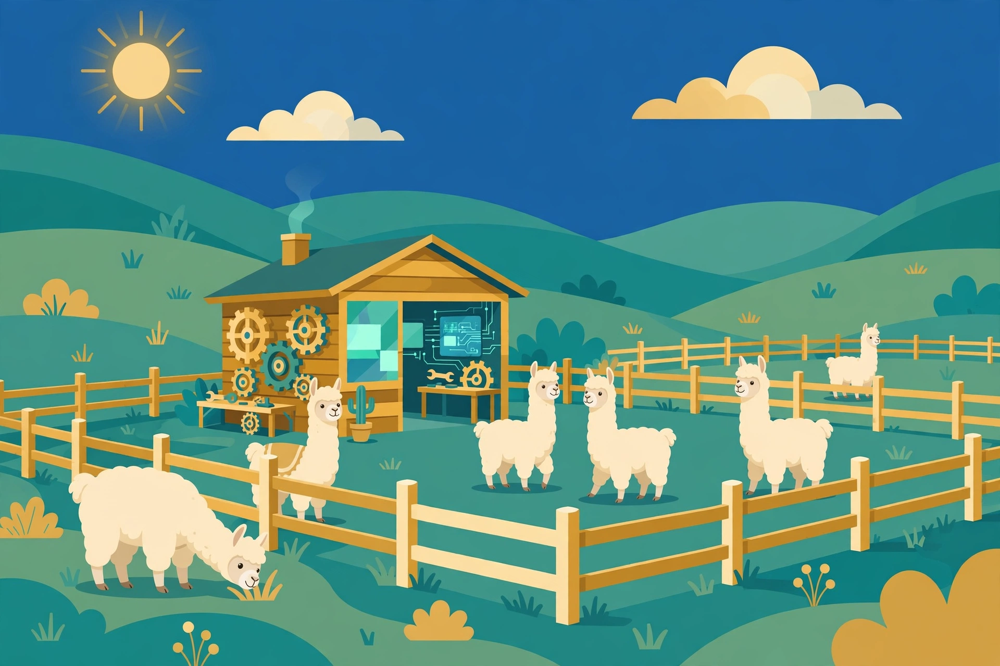

Welcome to the Llama Ranch 2.0 — sunny pastures, a workshop full of gears, and the best llama of the future.
Meet Lulu the Llama, the mascot of this world.
Signature Llama 2.0 is the best llama of the future: a live demo, free downloads, and Python and JavaScript code. The model is SIGLLAMA-V2, with 4,056,768 parameters, written and trained from scratch.
Two working tools, right here on the page. Each one says what it does and what it cannot do. Neither tool reaches the live web, and neither one needs a key.
Type or paste text to count its characters and words. The site’s tokenizer is character-level, so the token estimate is one token per character — an estimate, not a model run.
Search the 20 model guides by title. Shows up to 10 matches.
Search:
Designs, printables, and demos — free, downloadable, usable on the page. Every product is labeled Signature or Fun. Nothing here is for sale.
A poster card for SIGLLAMA-V2: the model name, the parameter count, and the four build stages, in the Ranch style.
Making: print the printable file and pin it up next to the model page.
A map of the Llama Ranch 2.0: pastures, fences, the workshop, and the llamas, drawn for fun.
Making: print the printable file and pin it up. The map is a drawing for fun, not a map of a real ranch.
A deck of task cards in the style of the generator: one model guide, two tools, and one term on each card.
Making: print the printable file on card, cut out the cards, and deal one card per task.
Download all product lines as a printable (text)
Lulu the Llama once ran the whole ranch demo on a single tablet, then asked the tablet for a second helping of pasture. The tablet said yes. (Fun — a made-up tale, not a record.)